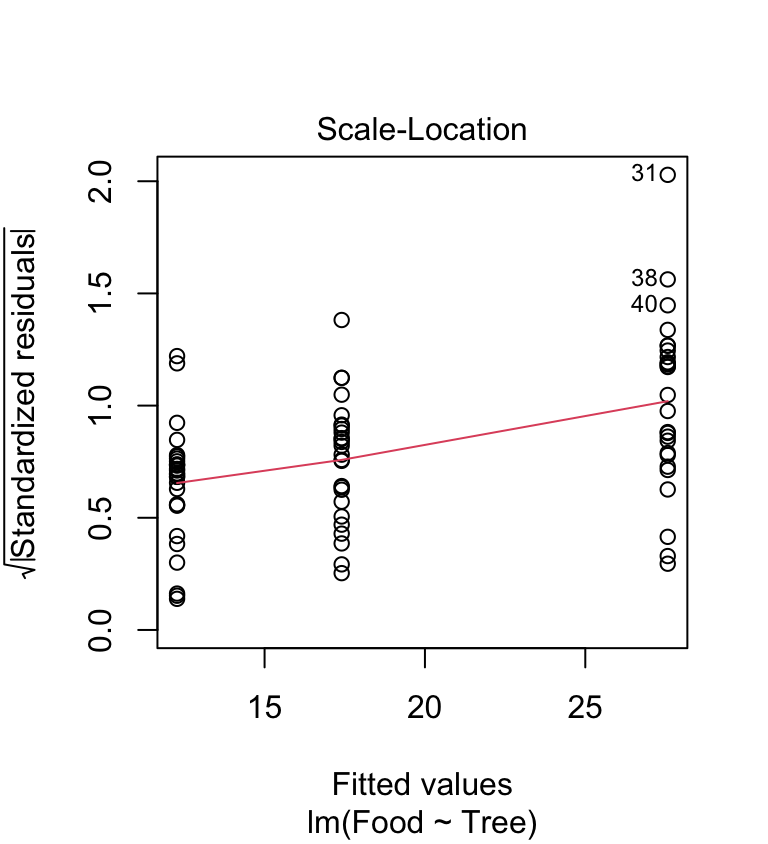
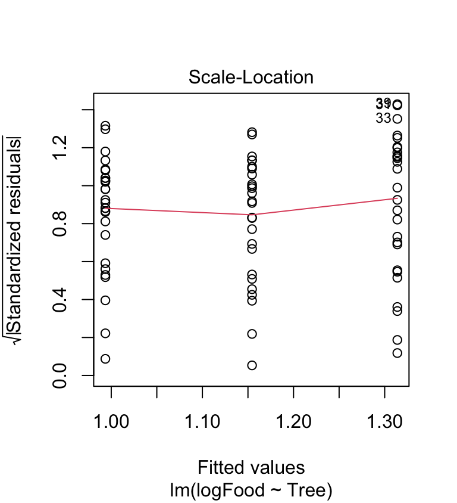

Chapter 22 Data transformations
22.1 Data that violate ANOVA assumptions
Up until now, the data we’ve examined have conformed, at least roughly, to the assumptions of the statistical models we’ve been studying. This is all very handy but perhaps a little unrealistic. The real world being the messy place it is, biological data often don’t conform to the distributional assumptions of t-tests and ANOVA:
- The residuals may not be normally distributed.
- Variances may be unequal among groups.
The kinds of problems with the distributional assumptions can also arise when working in a regression (i.e. non-normal residuals, non-constant variance). Furthermore, we might run into additional issues if there is some non-linearity in the relationship between the response and predictor variables.
Most biological data are unlikely to conform perfectly to all the assumptions. Fortunately, tools like t-tests, ANOVAs and regressions are somewhat robust—they perform reasonably well with data that deviate to some extent from the tests’ assumptions. However, when residuals are very far from normality or variances change a lot across groups, steps may need to be taken to deal with the problem. This chapter introduces one way to tackle the analysis of data that don’t fit the assumptions: transformation. We will mostly focus on ANOVA / t-test setting, but keep in mind that the ideas are equally applicable to regression analysis.
22.2 Transformation: ANOVAs and t-tests
22.2.1 The data—foraging in ants
Red wood ants, Formica rufa, forage for food (mainly insects and ‘honeydew’ produced by aphids) both on the ground and in the canopies of trees. Rowan, oak and sycamore support very different communities of insect herbivores (including aphids), and it would be interesting to know whether the foraging efficiency of ant colonies is affected by the type of trees available to them. As part of an investigation of the foraging of Formica rufa, observations were made of the prey being carried by ants down trunks of rowan, oak and sycamore trees. The total biomass of prey being transported was measured over a 30 minute sampling period and the data were expressed as the biomass (dry weight in mg) of prey divided by the total number of ants leaving the tree to give the rate of food collection per ant per half hour. Observations were made on 28 rowan, 26 sycamore, and 27 oak trees.
The data for this example are in the file ANTS1.CSV, which we assume has been read into a tibble called ants. Set that up if you wish to work throughth example.
The Tree variable contains the tree identities and the Food variable contains the food collection rates:
glimpse(ants)## Rows: 81
## Columns: 2
## $ Food <dbl> 11.9, 33.3, 4.6, 5.5, 6.2, 11.0, 24.3, 20.7, 5.7, 12.6, 10.2, 4.7…
## $ Tree <chr> "Rowan", "Rowan", "Rowan", "Rowan", "Rowan", "Rowan", "Rowan", "R…Let’s visualise the data. We could make a dot plot…
ggplot(ants, aes(x = Food)) +
geom_dotplot(binwidth = 6) + facet_wrap(~ Tree)…or we could construct a box and whiskers plot:
ggplot(ants, aes(x = Tree, y = Food)) +
geom_boxplot()It doesn’t matter which plot we use. They tell the same story. The food collection rate is generally highest in Oaks and lowest in Rowans (Sycamores are in between). Notice too that the sample distribution of food collection rate is right-skewed. The test we are most likely to use with these data is an ANOVA, i.e. we want to assess whether the mean food collection rates are different among the three tree species. There is already an indication that an ANOVA with the raw food values may be problematic.
22.2.2 Fit the model and checking the assumptions
This chapter is about fixing models when the assumptions are not satisfied. What assumptions do we need to check? The test we are most likely to want to use with these data is an ANOVA, so the following assumptions must be evaluated:
- Independence. The experimental units of the data must be independent.
- Measurement scale. The response variable is measured on an interval or ratio scale.
- Normality. The residuals are normally distributed in each level of the grouping factor.
- Equal variance. The variance in each level of the grouping factor is the same.
We’ll have to assume the first assumption is satisfied and the food collection rate (second assumption) is obviously measured on a ratio scale. The distributional assumptions (normality and equality of variance) are the ones we can address with a transformation. Let’s fit the ANOVA model and produce regression diagnostics to evaluate these. Remember that we make these kinds of plots after we have fitted a statistical model:
ant_mod <- lm(Food ~ Tree, data = ants)We need to produce a ‘normal probability plot’ to assess the normality assumption:
plot(ant_mod, which = 2)This plot exhibits the accelerating curvature that is indicative of right-skewed residuals. This probably isn’t just sampling variation because there is a systematic departure from the dashed line everywhere along it. So it looks like there is a problem. This sort of pattern is quite common in biological data, especially when it involves counts. Clearly, we might be a bit worried about using an ANOVA with these data since it assumes the residuals to be at least approximately normally distributed.
Are the variances significantly different? Look at the box plots above. The data from the three samples seem to have rather different scatter. The sample from the rowan has less variation than that from the sycamore, and the sycamore has less variation than the oak. Does the scale-location plot tell the same story?
plot(ant_mod, which = 3)
This shows that the variance increases with the fitted values—it looks like there is also a problem with the constant variance assumption. Again, this pattern is very common in biological data.
In the light of these evaluations, we have three options …
To carry on and carry out an ANOVA anyway and hope the violation of the assumptions won’t matter too much.
To try and transform the response variable to make it fit the assumptions better, then carry out an ANOVA.
To use a different sort of test which doesn’t require the data to conform to these assumptions. Such tests are known as nonparametric tests.
We will consider the first two options below, and return to the third in the non-parametric tests chapter.
22.3 Carrying on anyway
Carrying on doesn’t sound like a very good idea if we’ve already decided that the assumptions are suspect, but don’t dismiss it straight away. Mild departures from the assumptions often do not make a huge difference to the results of ANOVA (i.e. the p-values). At the very least, it can be instructive to continue an analysis without ‘fixing’ the apparent problems so that we can get a sense of whether they matter or not.
We already fitted the ANOVA model to allow us to make the diagnostic plots. All we have to do is pass the model object to the anova function to get the F-ratio and p-value for the tree effects:
anova(ant_mod)## Analysis of Variance Table
##
## Response: Food
## Df Sum Sq Mean Sq F value Pr(>F)
## Tree 2 3317.1 1658.53 8.0305 0.0006741 ***
## Residuals 78 16109.2 206.53
## ---
## Signif. codes: 0 '***' 0.001 '**' 0.01 '*' 0.05 '.' 0.1 ' ' 1Based on these results, it looks like there is a highly significant difference in food collection rates across the three tree species. However, we know the data are problematic, so the question is, does this result stand up when we deal with these problems?
t-tests are robust
The ‘carry on anyway’ strategy can sometimes be justified if we only need to compare the sample means of two groups because then we can use a two-sample t-test rather than an ANOVA. By default, R uses a version of the t-test that allows for unequal sample variances. This at least deals with one potential problem. The t-test is also fairly robust to violations of the normality assumption when the sample sizes are small, and when the sample sizes are large, the normality assumption matters even less.
The ability to do a t-test that doesn’t require equal variances is undoubtedly useful. A word of warning, though: some people advise carrying out a statistical test of equal variance, and if the variances are not significantly different, using the version of a two-sample t-test that assumes equal variances. This is not good advice. Following this procedure leads to less reliable p-values. The reason for this is somewhat technical, but trust us, this procedure is not good statistical practice.
22.4 Transforming the data
One approach to dealing with difficult response variable is to apply a mathematical function to it to make the transformed data fits the model assumptions better: a process called data transformation. This may sound a bit dubious, but it is a perfectly valid procedure that will often allow us to use the statistical model we want to, even if the data don’t initially fit the assumptions. The critical thing to keep in mind is that the transformation should be applied to the response variable.
22.4.1 The logarithmic transformation
Let’s try a simple transformation on the food collection rate variable in the ant data set. Instead of using the original numbers we will convert them to their logarithms. We can use common logs (logs to the base 10, written log\(_{10}\)) or natural logs (logs to the base, written log\(_{e}\) or ln). It doesn’t matter: they have the same effect on the data in terms of making it meet the assumptions of ANOVA (or not).
Applying a log transform is quick and easy in R—there are built-in functions to take common logs and natural logs, called log10 and log, respectively. We’ll use mutate to add a new variable, which is the common log of Food:
ants <- mutate(ants, logFood = log10(Food))We stored the transformed variable in a new column called logFood.
ant_mod_log <- lm(logFood ~ Tree, data = ants)We need to produce a ‘normal probability plot’ to assess the normality assumption:
plot(ant_mod_log, which = 2)The accelerating curvature (indicative of right-skewed residuals) has gone. The new normal probability plot is a little better than before. Now perhaps 60% of the cases are on the dashed line. It’s hardly perfect, though—the tails of the distribution are not where we’d like them to be. What about the variances?
plot(ant_mod_log, which = 3)
The scale location-plot indicates that the constant variance assumption is now OK, i.e. the variance no longer increases with the fitted values. It looks like the log transformation seems to have improved things quite a lot, but the diagnostics are still not perfect.
The assumptions are closer to being satisfied. Let’s carry out ANOVA again using the model with the transformed food variable to see how the results change:
anova(ant_mod_log)## Analysis of Variance Table
##
## Response: logFood
## Df Sum Sq Mean Sq F value Pr(>F)
## Tree 2 1.4106 0.70530 7.2867 0.001255 **
## Residuals 78 7.5498 0.09679
## ---
## Signif. codes: 0 '***' 0.001 '**' 0.01 '*' 0.05 '.' 0.1 ' ' 1What has happened? We still see evidence for a significant effect of tree (p<0.01) with the transformed data, but the p-value is somewhat bigger than when we used the original data. This illustrates why it is important to evaluate assumptions and deal with them when they are violated—the output of a statistical test is affected. It does not matter too much here, but in other settings, we can end up with misleading or downright spurious results if we ignore problems with the assumptions of a statistical model.
Values of 0
One thing to be aware of is that we cannot take the log of zero. If our response variable contain zeros we have add a small value to it before taking the logs. We usually add 1 to the variable, i.e. the transformation is \(log(x+1)\). It is worth trying this—it’s easy to do and can work well—but don’t be surprised if this transformation results in a model with poor diagnostics. For example, the \(log(x+1)\) transformation doesn’t work well when there are many zeros in the response variable.
22.4.2 Presenting results from analyses of transformed data
Having compared the transformed means, how should we present the results in a report? There are three alternatives. We’ll illustrate them using the log-transformation, though they also apply to other kinds of transformations.
We could present the transformed means (having stated what the transformation was, e.g. \(log_{e}(x+1)\)). The disadvantage to this is that the numbers themselves convey little information about the values on the original scale. This isn’t always a problem. For example, effects given on a log scale act in a ‘multiplicative’ manner, so a model with log-transformed response variable can still be interpreted if we know what we’re doing.
We could back-transform the means of the log-transformed data by taking the antilogs: \(10^{x}\) (for logs to the base 10) and \(e^{x}\) (for natural logs)21. However, when we back-transform data, we need to be aware of two things: (1) The back-transformed mean will not be the same as a mean calculated from the original data; (2) We have to be careful when we back-transform standard errors. Suppose we want to display the back-transformed means on a bar plot, with some indication of the variability of the data. In that case, we must calculate the standard errors and then back transform the upper and lower limits, which will not then be symmetrical about the mean.
We could also present the means calculated from the original data but state clearly that the statistical analysis was carried out on transformed data. This is often the simplest way to proceed.
Diagnostic plots vs p-values?
In the case study above, applying a log-transformation altered the outcome of the statistical test. Does that mean p-values tell us something about model adequacy? Not really. Transforming the response variable will not always make the difference between a significant and not significant result. In fact, p-values don’t tell us much at all about how good a model is for the data in hand. It is entirely possible for a really bad model to produce small p-values.
We have to use diagnostic plots to judge the success or not of a transformation. Do not use p-values to make that assessment!
22.5 Types of transformations
Taking logarithms is only one of many possible transformations. Each one is appropriate for solving different problems in the data. The following summarises four commonly used transformations and the sort of situations where they are useful.
22.5.1 Logarithms
Log transformation, as we’ve just seen, affects the response variable in two ways:
A log transformation stretches out a distribution’s left-hand side (smaller values) and squashes in the right-hand side (larger values). This is useful where the residuals’ distribution has a long tail to the right, as in the ant example above.
The ‘squashing’ effect of a log transformation is more pronounced at higher values. This means a log transformation may also deal with another common problem in biological data (also seen in the ant data)—samples with larger means having larger variances.
If we are carrying out an ANOVA and the scale-location plot exhibits a positive relationship—i.e. groups with larger means have larger variances—then a log transformation could be appropriate22.
22.5.2 Square roots
Taking the square root of the response variable is often appropriate where the data are whole number counts (the log transformation may also work here). This typically occurs where your data are counts of organisms (e.g. algal cells in fields of view under a microscope). The corresponding back-transformation is obviously \(x^{2}\).
In R, the square root can be taken using the sqrt function. It works like this using mutate:
mydata <- mutate(mydata, sqrt_x = sqrt(x))By the way, there is no square function. Taking squares is done using the ^ operator (e.g. if the variable is called x, use x^2).
22.5.3 Arcsine square root
The arcsine square root transformation is generally used where the response variable is in the form of percentages or proportions. Such data tend to get ‘bunched up’ at there limits—0 (0%) and 1 (100%)—which leads to non-normal distributions. A correction for this effect is to take the inverse sine of the square roots of the original variable, i.e. \(\arcsin \sqrt{x}\).
In R the transformation can be achieved by combining the sqrt and asin functions inside mutate. For example, if we need to transform a proportion stored in the x variable use something like:
mydata <- mutate(mydata, assqrt_x = asin(sqrt(x)))…where mydata is the name of hypothetical data frame containing the data. Just remember to apply sqrt and asin in the correct order. We used nested functions here, which are applied from the inside to the outside.
Converting percentages to proportions
The arcsine square root transformation is often discussed in the context of percentages, However, the transformation only works on numbers that lie between 0 and 1, yet percentages range between 0 and 100. This is why we have to convert percentages to proportions (e.g. 100% = 1, 20% = 0.2, 2% = 0.02, etc.) before applying the arcsine square root transformation.
22.5.4 Squaring
A problem the above transformations don’t deal with is when a response variable has a negative skew (i.e. a long tail to the left). This problem can sometimes be dealt with, or at least reduced, by squaring the data values.
In R, the transformation can be achieved by combining the ^ operator inside mutate. For example, we might use something like…
mydata <- mutate(mydata, sqr_x = x^2)…where mydata is again the name of hypothetical data frame containing the data.
22.5.5 Situations which cannot be dealt with by transformations
There are some situations where no transformation will get round the fact that the data are problematic. Two in particular are worth noting:
- Dissimilar distribution shapes: If two or more subsets of the data exhibit very different problems, then a transformation that corrects one subset ends up distorting the other(s). For example, this occurs when the response variable is strongly right-skewed in one treatment group but strongly left-skewed in another.
- Samples with many exactly equal values: When the response variable takes a limited set of values (e.g. small integers), there will be many identical values. Non-normality then results from groups of identical values forming particular ‘peaks.’ This cannot be corrected by transformation since equal values will still be equal after transformation!
Why is it OK to transform a response variable?
Changing the response variable by transformation alters the results of a statistical test. Isn’t this a bit dodgy? The key thing to realise is that the scales on which we measure things are, to some extent, arbitrary. Transforming data to a different scale replaces one arbitrary scale with another. The transformations we have discussed don’t alter the ordering of data points relative to each other—they only alter the gaps between them (that is the critical point). In some cases, this rescaling can make the data more amenable to study, analysis or interpretation.
In fact, we often use data transformations, perhaps without realising it, in many situations other than doing statistical tests. For example, when we look at a set of pH readings, we are already working with data on a log scale because pH units (0-14) are the negative logarithms of the hydrogen ion concentration in the water. Similarly, measurements of noise in decibels (dB), and seismic disturbance on the Richter scale, are logarithmic scales.
One final comment… Obviously, we do have to apply the same transformation to every observation. For example, we would never log transform the observations in one group and leave the others alone—that really would be cheating!
22.6 What about other kinds of models?
We have focussed on ANOVA here for the simple reason that the assumptions are a bit easier to evaluate compared to regression. However, exactly the same ideas apply when working with other kinds of models that lm can fit. The workflow is the same in every case:
- Always check the diagnostic plots after we fit a regression or ANOVA (and do this before worrying about p-values).
- If there is evidence for a problem with the assumptions, try transforming the response variable.
- Refit the model using the transformed variable and generate new diagnostic plots to see if the new model is any better.
Keep in mind that this is often an iterative process. We might have to go through several rounds of transforming and model checking before we arrive at a good model.
22.7 Final thoughts
Evaluating assumptions and picking transformations is as much ‘art’ as science. It takes time and experience to learn how to do it. R makes it easy to try out different options, so don’t be afraid to do this. Frequently, with biological data, no straightforward transformation improves the data, or in correcting one problem, we generate another. Fortunately, in many cases where the assumptions of a test are not reasonably well fulfilled, there is an alternative approach— which we will discuss in the non-parametric tests chapter.